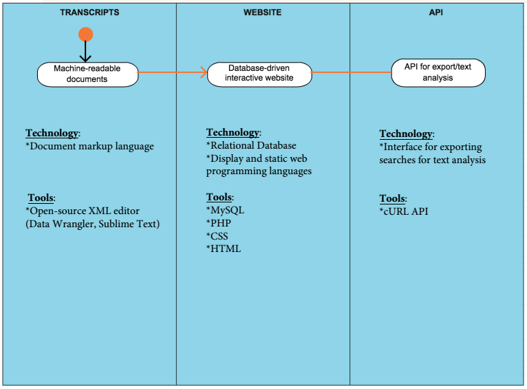

Today we met to discuss the necessary technologies we will have to master in order to complete our project of digitizing the HUAC records. Our proposed workflow currently looks like this:
The documents (which are already scanned) will be manually tagged using an XML editor according to identified categories, then read into an open-source relational database (MySQL), which reads XML documents. The MySQL database will be incorporated into the website using PHP in conjunction with the site (syntax-PHP within the HTML/CSS site schema). Finally, the API will allow users to export their searches to text-analysis resources.
Historians and Corpus
We've identified a number of historians, librarians and archivists, and digital humanists to potentially work with on this project and are in the process of reaching out to them in an advisory capacity. We seek guidance on our taxonomy and controlled vocabularies in the short term, and on future developments of our project beyond the scope of this semester.
We have narrowed down the corpus of text that we'll be working with to include 5 transcripts: Bertold Brecht; Ronald Reagan; Ayn Rand; Pete Seeger; and Walt Disney. This list of major cultural figures spans the hearings themselves and features both friendly and hostile witnesses, offering users a varied look into the nuances of interrogation. It is our opinion that by focusing on a witness base of recognizable figures that is thematically organized, users may examine their testimony as individuals and in context with one another. This quality of the HUAC hearings cannot be understated, and Digital HUAC seeks to draw attention to it through the overall user experience.
We are Digital HUAC, creators of the project that will develop the HUAC transcripts into a flexible learning environment for future digital humanities projects by opening the transcripts for data and textual analysis. This project intends to create a keyword-enabled, fully searchable online version of a small sampling of HUAC testimony and an API to export datasets for further data, textual, and visual analysis. The final product will be easily scalable to eventually encompass the complete HUAC records.
We believe HUAC material has a wide academic audience and substantial cultural significance. However, in their current form, HUAC records are difficult to locate, much less use, preventing the full extent of possible methods and research topics. Some, though not all, hearing transcripts have been digitized and are available as PDFs, making complex searching and text analyses difficult. This project would remediate such shortcomings. As it stands now, historians are the primary users of the HUAC transcripts, both physical and digital. We seek to bring the transcripts to this audience, as well as researchers from other fields and interested members of the general public, through a user-friendly interface paired with a robust export mechanism.
The HUAC records lend themselves well to textual analysis. Besides the sheer scope of the material- almost forty years of hearings and reports- the constantly shifting focus of the committee in response to current events make it a useful tool for the visualization of trends over time. The dynamic qualities of the transcripts-such as variations in speakers and speech- make them of interest to more than just historians. Disciplines diverse as forensic computational linguistics, American Studies, and media studies will have an interest in examining HUAC transcripts. Such cross-disciplinary applications reinforce the value this project has to the wider digital humanities community. With this project, researchers will be able to easily search and export their results, thus addressing a need for these texts to be available for data and textual analysis.
The HUAC records, composed of hundreds of hearings and over tens of thousands of pages from 1938-1975, represent one of the most substantive and largest collections of 20th century American political and social history. The records provide primary source material on American Cold War history and a unique account of government responses to real and perceived political dissent at key moments in American history.
Not only do we plan to make these important historical documents available to the public, but we will also provide an interface that will make the documents searchable and usable for research.
Our project goals include: